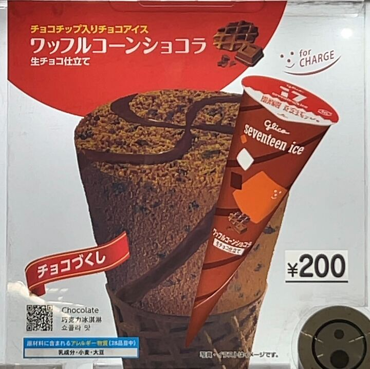

自動販売機
-
サイダー
さっぱりとした炭酸風味がアイスクリームに絶妙にマッチ。
口に入れるとシュワッと弾ける爽快感があり、甘さ控えめなので暑い日にぴったりです。後味にほんのり柑橘系の香りが残り、何度でもリピートしたくなる軽やかさ。 -
クッキー＆クリーム

バニラベースのクリーミーな甘さに、ザクザクとしたココアクッキーがたっぷり。
クッキーのほろ苦さがアクセントになり、ただのバニラアイスにはない食感の楽しさがあります。大人から子どもまで愛される王道フレーバー。 -
宇治抹茶
濃厚で香り高い抹茶の味わいがしっかり感じられる一品。
苦みと甘みのバランスが秀逸で、後味にもちょっとした渋みが残る本格派。抹茶好きにはたまらない、和の風味を存分に楽しめるアイスです。 -
ワッフルコーンショコラ

パリッとしたワッフルコーンと、ビターなチョコレートコーティングが相性抜群。
中のチョコアイスは濃厚ながらも後味は重たすぎず、コーンの香ばしさと一緒に最後まで飽きずに食べられます。食感と味わいのコントラストが楽しいフレーバー。 -
チョコミント
爽やかなミントの清涼感と、ほろ苦いチョコチップの組み合わせが爽快。
ミントの冷涼感が強すぎず、ほどよい刺激で口内がリフレッシュ。甘さと清涼感のバランスが絶妙で、夏場に特におすすめしたい一品です。